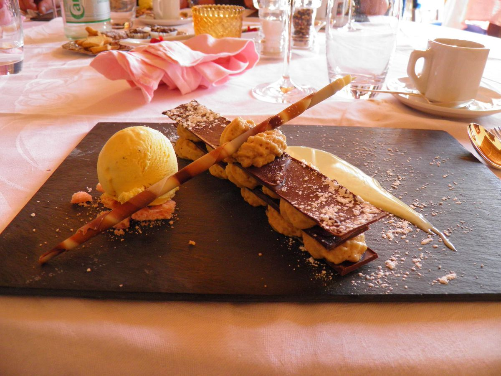

Worth saving room for
The millefeuille
Crackly layers, vanilla cream and a scoop of ice cream. The one people come back for.
$11
Changes weekly
One sentence: how often it changes, and what decides it.
Two menus to try: Diner · Classic
Snacks while you decide
Twirl responsibly
The big ones
Save room. Seriously.

Worth saving room for
Crackly layers, vanilla cream and a scoop of ice cream. The one people come back for.
$11
Bottomless coffee, thick shakes